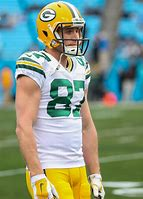

History
The Packers were founded in 1919 by Earl "Curly" Lambeau and George Whitney Calhoun. The Packers aren't just your average professional sports team, playing in a city containing a population of around 100,000 people is impressive. What's even more impressive is the fact that the Packers have sold out every home game for the last 58 years! The Packers are known for winning, as evident by their nickname "Titletown, the Packers have won 13 NFL Championships total since 1919, and 4 superbowls since the NFL-AFL merger in 1966. The Packers are home to the legendary Lambeau Field.
LakersLink
Lambeau Field
Whether you call it the Frozen Tundra, Titletown USA, The Shrine of Pro Football, or just Lambeau field, it's one of the most iconic landmarks in American sports history. Built in 1957 as "City Stadium" it obtained a name change after eight seasons in memory of Packers founder, player, and longtime head coach Curly Lambeau. Lambeau Field is the oldest continually operating NFL stadium. In 2007 the Packers completed their 51st season at Lambeau, breaking the all-time NFL record set by the Chicago Bears at Wrigley Field.
List of Championship Seasons
1929- Packers ended season with best record (12-0-1).
1930- Packers ended season with best record (10-3-1).
1931- Packers ended season with best record (12-2-0).
1936- Packers defeated the Boston Redskins by a score of 21-6.
1939- Packers defeated the New York Giants by a score of 27-0.
1944- Packers defeated the New York Giants by a score of 14-7.
1961- Packers defeated the New York Giants by a score of 37-0.
1962- Packers defeated the New York Giants by a score of 16-7.
1965- Packers defeated the Cleveland Browns by a score of 23-12.
1966- Packers defeated the Kansas City Chiefs by a score of 35-10. (1st Superbowl win)
1967- Packers defeated the Oakland Raiders by a score of 33-14. (2nd Superbowl win)
1996- Packers defeated the New England Patriots by a score of 35-21. (3rd Superbowl win)
2010- Packers defeated the Pittsburgh Steelers by a score of 31-25. (4th Superbowl win)
Notable Players
Aaron Rodgers is arguably the most talented QB in NFL History. He has arm talent never seen before and has brought a Superbowl back to Green Bay.
Brett Favre was the heart and soul of Green Bay for many years. Brett Favre is easily the most well liked Green Bay Packer of all time amongst the fans. He brought a Superbowl back to titletown after 30 years of turmoil.
Reggie White is one of the most dominant players in NFL history. Reggie White was able to control the line of scrimmage and toss bodies around like ragdolls. Reggie White was part of the best defense Green Bay has ever had.
Don Hutson revolutionized the wide receiver position. His blend of quickness and agility translated well to a league converting to spread offenses to score more points. Don Hutson is a born winner.
Bart Starr is one of the most underrated quarterbacks in the histroy of football. This man won five championships including two superbowls, he came up clutch when it mattered.

Jordy Nelson wouldn't blow you away with his speed, but man was he a brilliant player. Jordy used great route running skills to help turn his career into a very notable one.
Sterling Sharpe was something else on the field. Sharpe was able to get consistently open with his great speed and route running. Sharpe was Favre's favortite target for many years.